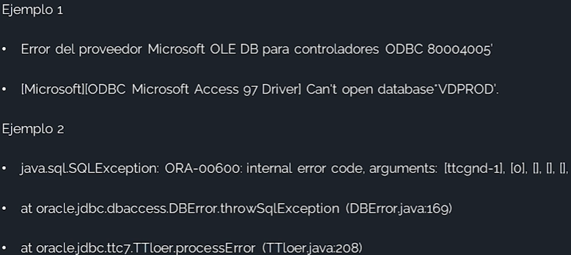
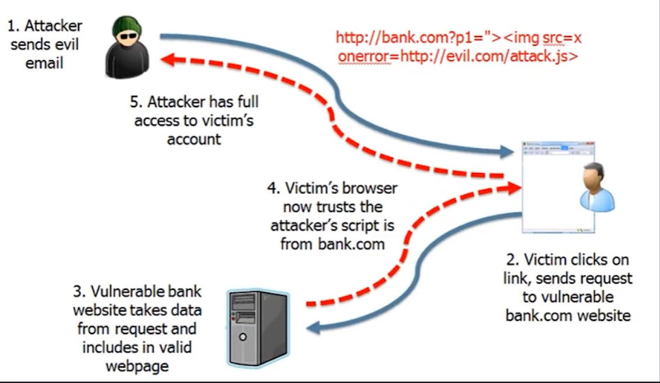
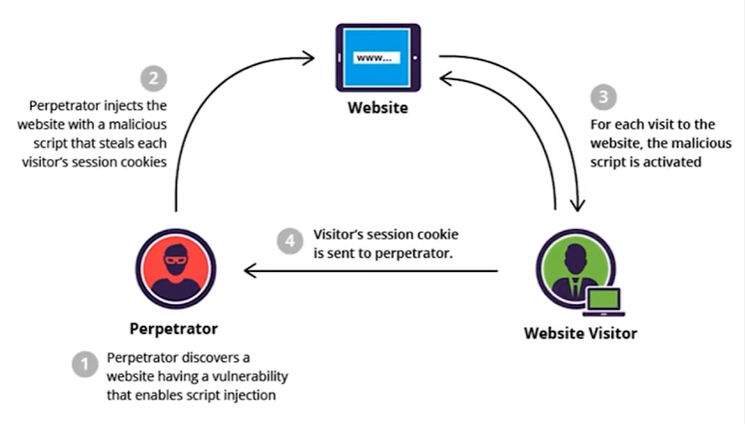

03 - Vulnerabilidades en Aplicaciones Web 🕸️
Resumen: Descubre los principales riesgos de seguridad en aplicaciones web, cómo identificarlos y las mejores prácticas para mitigarlos. Basado en el OWASP Top 10 y ejemplos reales.
1. Introducción
Las aplicaciones web son objetivos frecuentes para atacantes, especialmente si están mal administradas o desactualizadas. Las vulnerabilidades más comunes incluyen:
- Falta de requisitos de seguridad desde el inicio del desarrollo
- Errores lógicos en el diseño
- Prácticas de codificación inseguras
- Implementación incorrecta en producción
- Fallos durante el mantenimiento o actualización
2. OWASP Top 10: Principales Amenazas

- Broken Access Control: Acceso no autorizado a recursos protegidos.
- Cryptographic Failures: Fallos en la protección de datos sensibles.
- Injection: Inyecciones de código (SQL, LDAP, OS, etc.).
- Insecure Design: Diseño inseguro o sin controles adecuados.
- Security Misconfiguration: Configuración insegura de servidores o aplicaciones.
- Vulnerable and Outdated Components: Uso de componentes obsoletos o vulnerables.
- Identification and Authentication Failures: Fallos en autenticación y gestión de identidades.
- Software and Data Integrity Failures: Problemas en la integridad de software y datos.
- Security Logging and Monitoring Failures: Registro y monitoreo insuficientes.
- Server-Side Request Forgery (SSRF): Manipulación de solicitudes del lado servidor.
3. Ejemplos de Vulnerabilidades y Contramedidas
3.1 Inyección (Injection)
Permite ejecutar comandos no deseados en el servidor a través de entradas no validadas.
Ejemplo:

¿Cómo protegerse?
- Validar y sanear todas las entradas
- Usar consultas parametrizadas y APIs seguras
- Revisar código y bibliotecas reutilizables
- Ejecutar comandos con privilegios mínimos
3.2 Exposición de Datos Sensibles
Filtrado inadecuado o cifrado débil puede exponer información crítica.


¿Cómo protegerse?
- Evitar mostrar mensajes de error internos
- Cifrar datos en tránsito y en reposo
- Usar protocolos y algoritmos seguros
- Desactivar caché de datos sensibles
3.3 Entidades Externas XML (XXE)
Permite ejecutar código o robar datos mediante XML malicioso.

¿Cómo protegerse?
- No serializar datos sensibles
- Validar y restringir carga de XML
- Usar WAF y revisión de código
3.4 Control de Acceso
Acceso no autorizado a recursos o datos protegidos.
¿Cómo protegerse?
- Autenticación robusta (MFA)
- Políticas claras de autorización
- Principio de privilegio mínimo
- Monitoreo y registro de accesos
- Invalidar tokens/cookies tras logout
3.5 Configuración de Seguridad Incorrecta
Mala configuración de servidores, contraseñas débiles, servicios innecesarios.

¿Cómo protegerse?
- Refuerzo de hardware y aplicaciones
- Modificar valores por defecto
- Instalar solo funciones necesarias
- Revisar configuraciones periódicamente
3.6 Cross-Site Scripting (XSS)
Permite inyectar scripts maliciosos en páginas legítimas.
Tipos:
- Reflejado (no persistente)
- Llega por correo o enlaces externos
- Ejecuta scripts al visitar el enlace
- 
- Almacenado (persistente)
- El código se almacena en la base de datos o comentarios
- Afecta a todos los usuarios que visitan la página
- 
¿Cómo protegerse?
- Filtrar y sanear entradas y salidas
- Codificar caracteres peligrosos
- Usar frameworks seguros (ej: OWASP AntiSamy)
- Implementar CSP (Content Security Policy)
3.7 Deserialización Insegura
Manipulación de objetos serializados para escalar privilegios.

¿Cómo protegerse?
- Cifrar datos serializados
3.8 Uso de Componentes Vulnerables
Uso de frameworks, librerías o sistemas desactualizados.
Ejemplos:
- PHP o kernel obsoletos
- Servidores sin parches
- Versiones vulnerables de librerías
¿Cómo protegerse?
- Aplicar parches regularmente
- Suscribirse a alertas de seguridad (CVE/Fixes)
3.9 Registro y Monitorización Insuficientes
No detectar ataques a tiempo por falta de logs o alertas.
¿Cómo protegerse?
- Supervisión 24/7 y análisis de registros
- Procedimientos de respuesta a incidentes
3.10 Riesgos Adicionales
- CSRF (Cross-Site Request Forgery): Induce a usuarios a ejecutar acciones no deseadas.
- Carga ilimitada de archivos peligrosos: Permite subir scripts o malware.
- Clickjacking: Engaña al usuario para hacer clic en elementos ocultos.
4. Descubrir Vulnerabilidades en Sitios Web
Antes de realizar pruebas de penetración, realiza un escaneo exhaustivo con herramientas automáticas y revisa manualmente configuraciones y código fuente.
5. Herramienta Destacada: SQLMap
SQLMap automatiza la detección y explotación de inyecciones SQL, permitiendo tomar control del servidor de base de datos.
Motor de detección avanzado y múltiples opciones para personalizar los ataques.